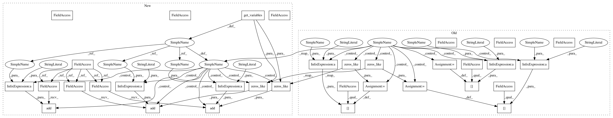

360ed9d9b6a8f25e8ec1302b523ca3dcc97c6f02,theanolm/training/adamoptimizer.py,AdamOptimizer,__init__,#AdamOptimizer#Any#Any#,17
Before Change
numpy.dtype(theano.config.floatX).type(0.0)
for name, param in network.params.items():
self.param_init_values[name + "_gradient"] = \
numpy.zeros_like(param.get_value())
self.param_init_values[name + "_mean_gradient"] = \
numpy.zeros_like(param.get_value())
self.param_init_values[name + "_mean_sqr_gradient"] = \
numpy.zeros_like(param.get_value())
// geometric rate for averaging gradients
if not "gradient_decay_rate" in optimization_options:
raise ValueError("Gradient decay rate is not given in training "
After Change
:param network: the neural network object
self._params = Parameters()
float_type = numpy.dtype(theano.config.floatX).type
self._params.add("optimizer/timestep", float_type(0.0))
for path, param in network.get_variables().items():
self._params.add(path + "_gradient",
numpy.zeros_like(param.get_value()))
self._params.add(path + "_mean_gradient",
numpy.zeros_like(param.get_value()))
self._params.add(path + "_mean_sqr_gradient",
numpy.zeros_like(param.get_value()))
// geometric rate for averaging gradients
if not "gradient_decay_rate" in optimization_options:
raise ValueError("Gradient decay rate is not given in training "
In pattern: SUPERPATTERN
Frequency: 3
Non-data size: 33
Instances
Project Name: senarvi/theanolm
Commit Name: 360ed9d9b6a8f25e8ec1302b523ca3dcc97c6f02
Time: 2016-12-06
Author: seppo.git@marjaniemi.com
File Name: theanolm/training/adamoptimizer.py
Class Name: AdamOptimizer
Method Name: __init__
Project Name: senarvi/theanolm
Commit Name: 360ed9d9b6a8f25e8ec1302b523ca3dcc97c6f02
Time: 2016-12-06
Author: seppo.git@marjaniemi.com
File Name: theanolm/training/adamoptimizer.py
Class Name: AdamOptimizer
Method Name: __init__
Project Name: senarvi/theanolm
Commit Name: 360ed9d9b6a8f25e8ec1302b523ca3dcc97c6f02
Time: 2016-12-06
Author: seppo.git@marjaniemi.com
File Name: theanolm/training/rmspropnesterovoptimizer.py
Class Name: RMSPropNesterovOptimizer
Method Name: __init__
Project Name: senarvi/theanolm
Commit Name: 360ed9d9b6a8f25e8ec1302b523ca3dcc97c6f02
Time: 2016-12-06
Author: seppo.git@marjaniemi.com
File Name: theanolm/training/adadeltaoptimizer.py
Class Name: AdadeltaOptimizer
Method Name: __init__